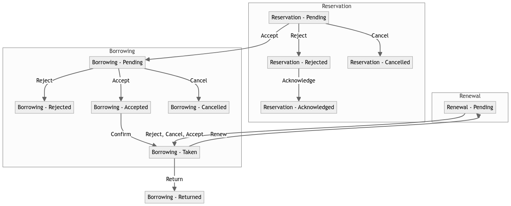

The User is greeted with the login page. In order to log in to the system, they shall enter their usename and password. In case of success, they are directed to the homepage. Otherwise, they are asked to log in again.
This page also contains a link to the registration page. The User may use it to create an account if they do not have one yet.
In order to register a new account, the User shall: provide a username, an email and a password. The password must be at least 8 characters long and contain at least one: uppercate letter, lowercate letter, digit, special character. The password shall be repeated to confirm. Acceptance of regulations and terms is mandatory.
This page contains a link to the login page, in case the User reminds themself they already have an account though.
The homepage contains the searching bar and links to: collection browsing page, notifications view page, bookshelf page, account settings page, add-book-to-bookshelf page.
Other pages contain link leading to homepage.
All publications are sought that contain the input string in the title or in the name or surname of any of the authors. Searching with an empty string results in all publications being shown.
Each result has a link to the reservation page.
The page contains data of the publication. If it is not the currenltly logged User's publication, they may resrve it by clicking the link on that page. The reservation is done from the moment of click for 14 days' time. The User is then redirected to the homepage.
Here is where the User may see all their collection, if any. For each book, the User is shown: the title, the year of publication, the ISBN/ISSN and the authors.
This page contains links to pages for: adding, editing or removing a publication from the collection.
The User shall provide the following data to add a publication to the collection: the title, the date of publication, condition of the publication, type of the publication, ISBN/ISSN and the authors.
An author can be added in two ways: one may either select an author from the list that contains the authors already present in the system, or input the name and the surname of a new author.
The user is redirected to the browsing page.
The User shall select the publication they want to edit. Button "Fill" populates the form with current data.
The user is redirected to the browsing page.
The User is shown all their publications. One is removed from the collection simply by clicking the button "Remove".
One may continue removing and go back to the browsing page via the link.
The Notification Page allows users to manage the requests they send or receive related to reservations, borrowing, and renewals of publications. Each type of request has various statuses and actions that can be taken. The diagram below outlines the flow of these requests and their possible states.
Pending - A reservation request is awaiting action.
Rejected - A rejected reservation that can be acknowledged.
Pending - A borrowing request is awaiting action.
Accepted - A borrowing request that has been accepted.
Taken - The item has been borrowed.
Pending - A renewal request is awaiting action.
Users can view all their bookshelves and the books they contain. Additionally, they can add or delete bookshelves and assign books to them.
To delete or add bookshelves, users should click the appropriate button and then enter the name of the bookshelf in the pop-up prompt.
To add a book to a bookshelf, users should click the "Add Book" button, which redirects them to the page for adding publications to bookshelves.
Adding a book to a bookshelf is a simple process. Users should first select the appropriate bookshelf, then choose the book they want to add, and finally, press the "Add" button.
The User is shown the current settings of the account: the username, the email and the status. In lieu of the password there are blank fields.
In order to change the value of certain setting, the User just enters the new value. Not to change a setting, the User leaves it as it is.
The proposed username and email need to be unique in the system to be accepted.
Confirmation with current password is required.